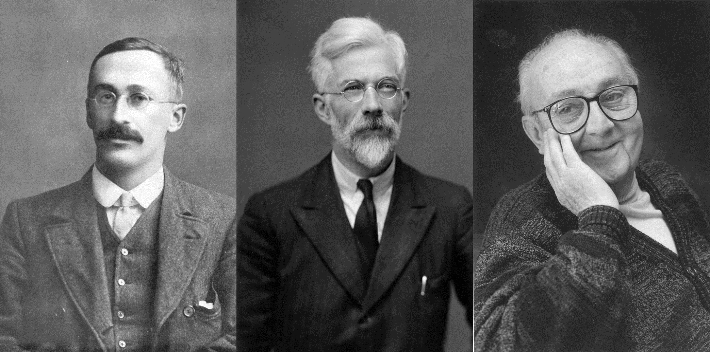
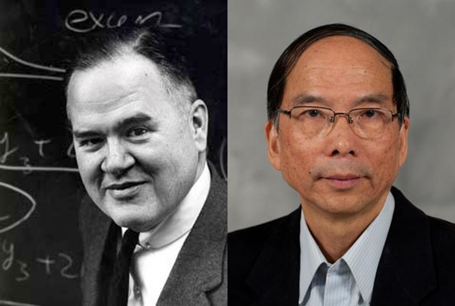
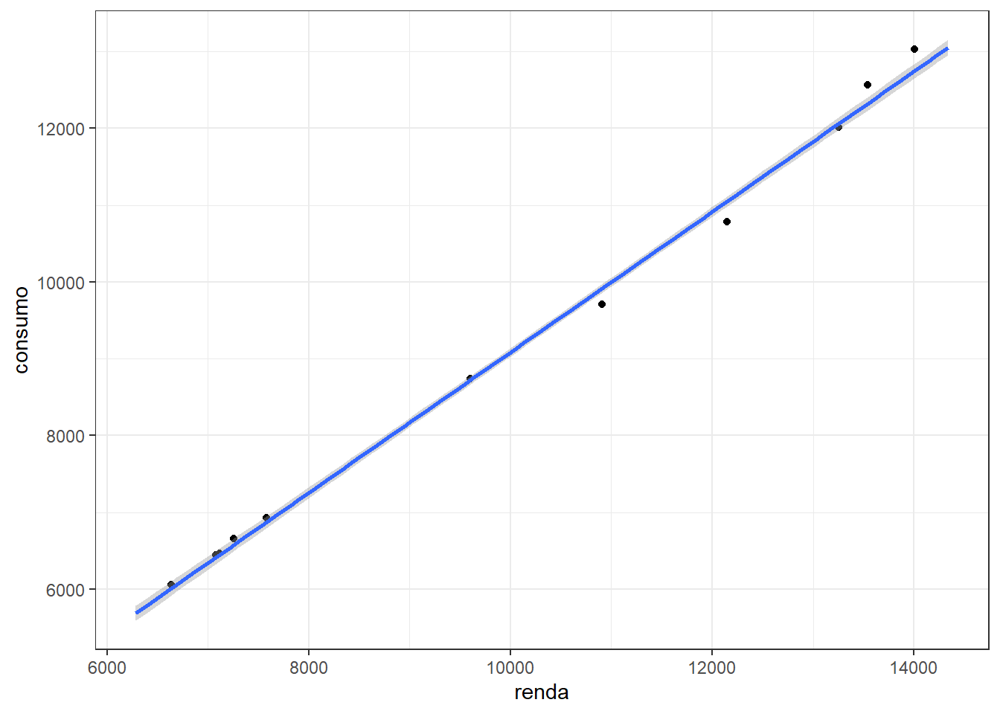
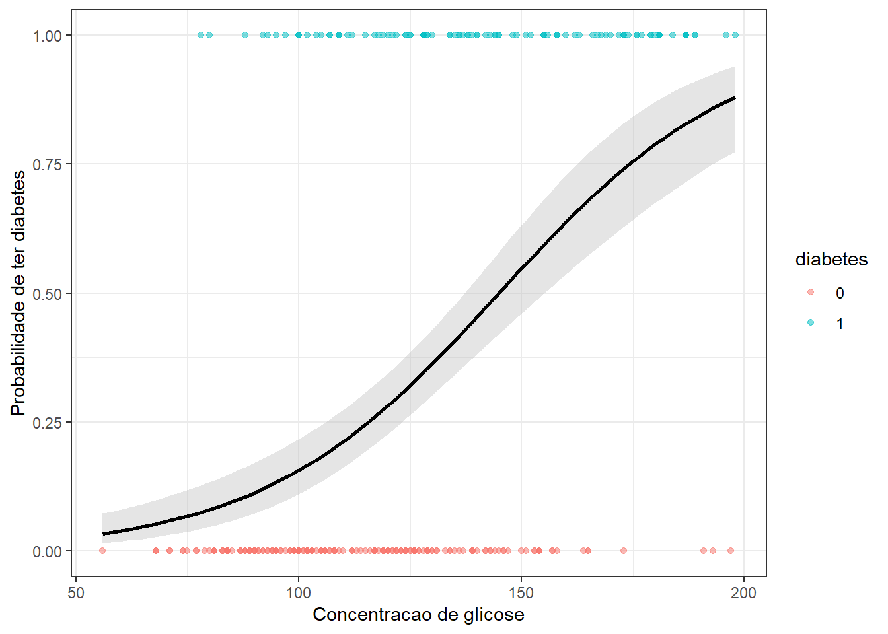
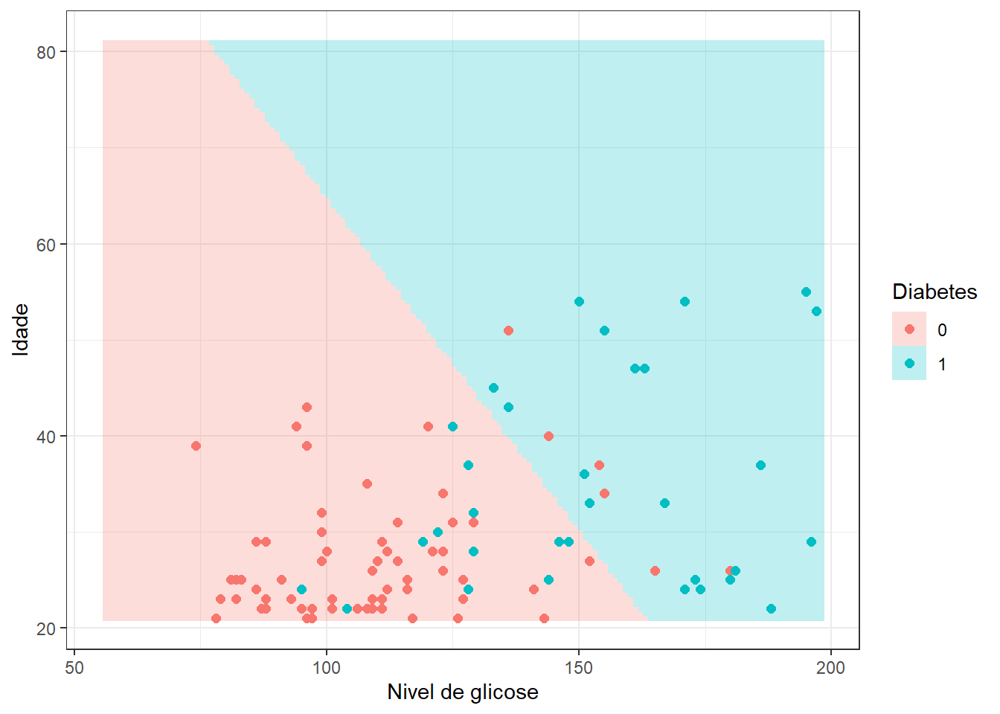
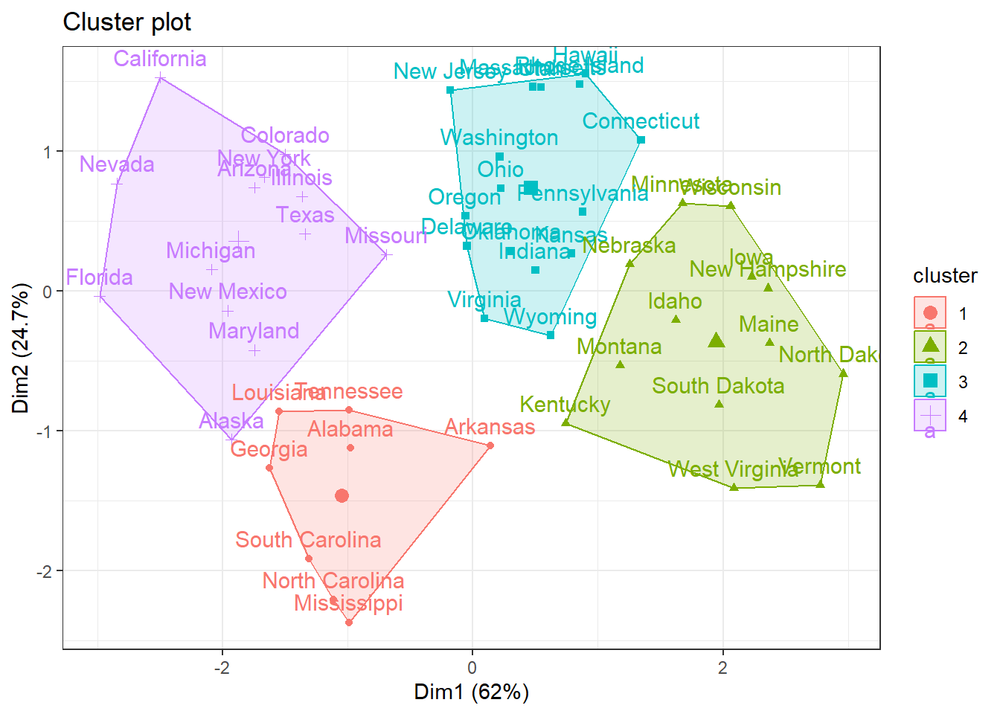
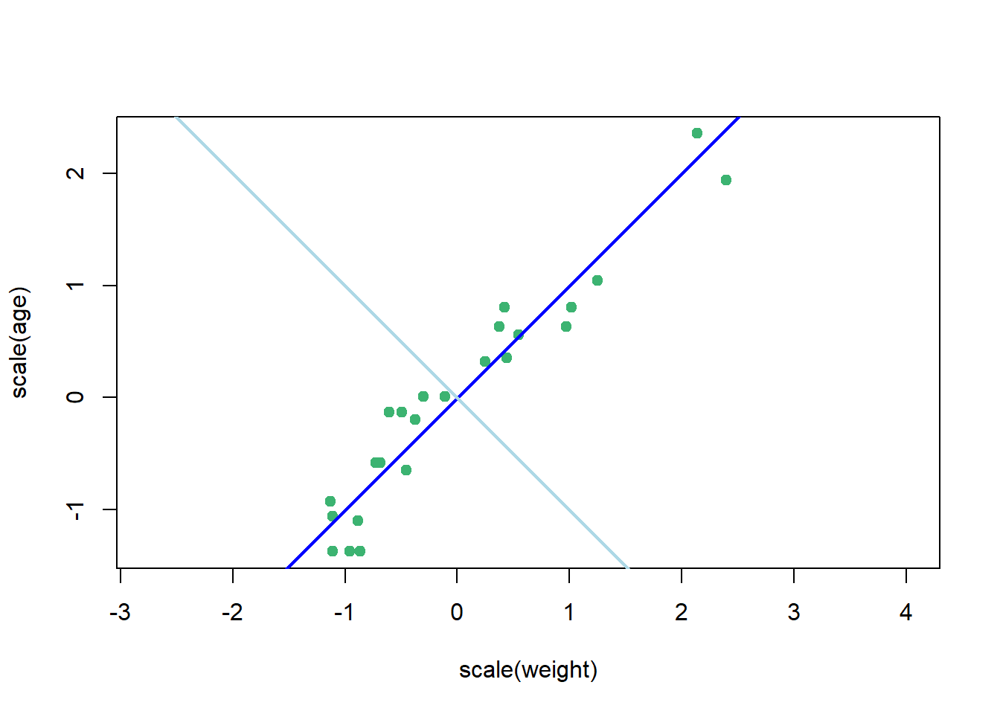

Aprendizado supervisionado - Introdução
Aprendizado
No contexto da ciência de dados (data science) o Aprendizado consiste em aprender um determinado comportamento a partir dos dados disponíveis.
Inicialmente o aprendizado pode ser classificado em:
- Estatístico (statistical learning);
- de Máquina (machine learning).
Alguns métodos surgiram no subcampo da Estatística denominado Aprendizado estatístico, tais como as árvores de decisão, aprendizado por reforço e máquinas de vetores de suporte, enquanto outros surgiram no subcampo da Ciências da computação e Inteligência Artificial, como as redes neurais e aprendizado profundo. Hoje é difícil separar ambos campos, apesar do aprendizado de máquina ser mais popular.
Um pouco de história
Inicialmente serão citados alguns teóricos mais importantes para a estatística frequentista e paramétrica. Porém alguns métodos propostos, por exemplo a análise discriminante linear de Fisher é considerado um método iportante de aprendizado supervisionado para classificação.
Willian Gosset (Student), 1908-1909: criou o teste t e a distribuição t de Student quando trabalhava na cervejaria Guiness. Sua intenção era criar uma aproximação da distribuição normal para amostras de tamanhos limitados.
Ronald Fisher, 1920-1940: Criou vários testes e conceitos estatísticos importantes, como a ANOVA, análise discriminante linear, p-valor, entre outros. Seus principais desenvolvimentos foram realizados especialmente enquanto trabalhava na estação agrícola Rothamsted Research no Reino Unido.
George Box, 1948-1992: Considerado uma dos maiores pesquisadores em estatística do século XX, desenvolveu trabalhos e métodos em controle de qualidade, planejamento de experimentos, séries temporais e inferência Bayesiana. Cunhou a famosa frase: “All models are wrong, some are usefull”.
Alguns estatísticos foram importantes para definir termos que hoje são importantes e englobam a teoria do Aprendizado supervisionado.
John Tukey (1962, 1977): Cunhou o termo Análise exploratória de dados, com o objetivo de incentivar a ênfase em gráficos, tabelas e limpeza de dados para resumir dados e apontar suas tendencias.
Jeff Wu (1980): Formulou o termo data science e inclusive recomendou que a área de conhecimento Estatística fosse renomeada para Ciência de dados.

Um brasileiro importante
Existem muitos teóricos importantes recentes os quais serão apresentados durante o curso. Para motivar a todos vamos apresentar um brasileiro que tem feito um excelente trabalho na área de aprendizado por reforço.
Carlos Guestrin é professor da Universidade de Stanford, foi diretor sênior de Machine Learning da Apple (2016-2021). Criador do método de reforço por gradiente extremo (extreme gradient boosting).
Aprendizado Supervisionado versus não supervisionado
Aprendizado Supervisionado
Seja um conjunto de variáveis de entrada, independentes ou preditores \(x_1, x_2, ..., x_k\) e uma variável dependente ou supervisora \(y\). Dado uma amostra de observações para tais variáveis, o aprendizado supervisionado visa prever o comportamento ou resultado de \(y\), considerando valores futuros de \(x_j\), \(\forall j=i, ..., k\). O aprendizado supervisionado pode ser classificado em dois tipos:
- Regressão, \(y \in \mathbb{R}\), ou seja, quando a resposta ou supervisor pode ser medida em uma escala real (há casos para variáveis numéricas do conjunto dos números inteiros);
- Classificação, \(y \in \{A, B, C, ...\}\), ou seja, quando a resposta pertence a conjunto finito de categorias.
A seguir um exemplo de aplicação de regressão linear simples para prever consumo em função da renda. O modelo foi treinado com um conjunto de dados de 33 observações e aplicado em 11 observações de teste.

A seguir um exemplo do resultado gráfico de um modelo de regressão logística para classificação de pessoas com diabetes em relação a glicose, onde 1 = diabético e 0 = não diabético.

Neste segundo exemplo considera-se além da glicose a idade do paciente para obter um modelo de regressão logística de forma a classificar pacientes com diabetes. Foram consideradas 294 observações para treinamento e 98 para teste do modelo.

Aprendizado Não-supervisionado
Seja um conjunto de variáveis de entrada, independentes ou preditores \(x_1, x_2, ..., x_k\). O aprendizado não-supervisionado visa obter informações a partir dos próprios dados de entrada, sem a necessidade de um supervisor ou variável dependente. Consitiu-se de técnicas de agrupamento e redução de dimensionalidade.
A seguir expõe-se um gráfico do resultado de um agrupamento por k-médias considerando assassinatos, assaltos, estupro e outros índices de criminalidade e demográficos nos EUA. São plotados os dois índices mais importantes.

A seguir expõe-se um gráfico de dispersão para idade e peso de órgãos retirados de 30 focas do Cabo que morreram como consequência não intencional da pesca comercial. Devido a alta correção entre as variáveis, \(R = 0.95\), foi realizada uma análise de componentes principais para obter uma nova variável ou componente principal que represente ambas as variáveis, reduzindo a dimensionalidade do problema. A nova variável obtida, plotada em azul escuro, representa 98% da variabilidade das variáveis originais.
